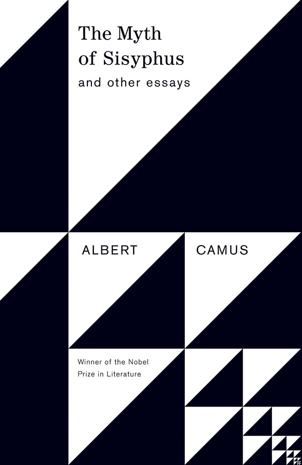
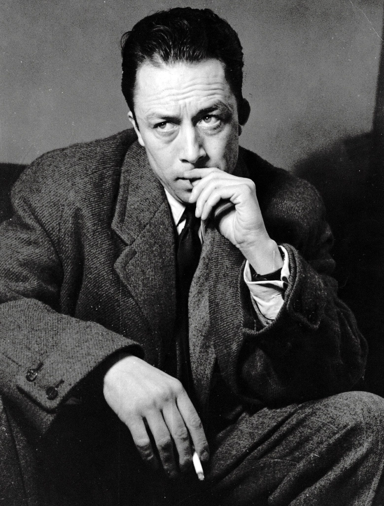

All three of the philosophers we learn about seek to solve one seemingly simple question, what is the purpose of life? Aristotle, the first one we learn about, argues that the key to understanding life’s purpose will be found in our pursuit of the common good. He argues that everything has a purpose, and as human beings, striving for excellence, will contribute to the common good of society. The search for meaning, then, is tied to our search for a life of moral and intellectual excellence.
Kant builds upon Aristotle’s ideas and refines them by distinguishing between our practical and theoretical reasons for living. For Kant, the purpose of life is in rational, universal principles that will guide our actions. He argues that we should act according to moral laws that are applicable to all people and support us in the search of the supreme moral good. The supreme moral good for Kant is found in our search for god, and using our autonomy to make ethical choices that lead to the immortal life in heaven. Kant's morality is not just about the individual, but adhering to rules that reflect Jesus’ actions.
Levinas, shifts the focus to ethics in a more relational sense. He suggests that the good is found in our responsibility to others, particularly in how we respond to the needs of the "Other." For Levinas, the ultimate ethical good is infinite and cannot be fully realized because there is always more that we can do to care for others. The search for what is good, in Levinas’s view, is not about achieving a final goal or state, but rather an ongoing process of moral responsibility and openness to the needs of others.
Albert Camus' The Myth of Sisyphus, approaches the question of life’s purpose from a perspective that contrasts sharply with the all philosophical, ethical, and therefore moral framworks of the three we've learned about. Camus indirectly rejects all of their notions, through arguing that life has no inherent meaning, and humans search for purpose is met with an indifferent, silent universe. This confrontation between our desire for meaning and the universe’s lack of it is what Camus calls the absurd.
Rather than resolving this conflict through reason, religion, or morality, Camus insists that we must embrace the absurd without resorting to false hope. In his book, The Myth of Sisyphus, he examines how we should respond to this reality. He begins by asking whether, in a world without meaning, wheter suicide is the only logical response. He argue not, and instead states that true freedom comes from accepting the absurd and living in defiance of it. He illustrates the concept through the Greek myth of Sisyphus, a figure condemned to roll a boulder up a hill for eternity, only for it to roll back down when he reaches the top. To Camus, Sisyphus represents the human condition of our endless pursuit for purpose in a world that offers none. However, rather than viewing this fate as tragic, Camus suggests that in recognizing and accepting the absurdity of his condition, Sisyphus finds his happiness. Sisyphus' rebellion lies in continual his struggle despite his knowledge that it will never end, and in this way, he is free.

Camus' philosophy stands in direct contrast to those of Aristotle, Kant, and Levinas. While Aristotle sees meaning in virtue and the pursuit of the common good, Camus denies that such a purpose exists. Kant’s emphasis on moral duty and the hope for an afterlife is, to Camus, an escape from the absurd. Even Levinas' ethical responsibility to the "Other" assumes an inherent value in human relationships, whereas Camus argues that meaning must be created by the induvidual, than something external. Ultimately, Camus challenges the idea that meaning of life can be discovered through moral or intellectual pursuits, embraces a life lived in full awareness of its absurdity and by doing so, he invites us to find joy in the continual search itself, as Sisyphus did in his endless task.